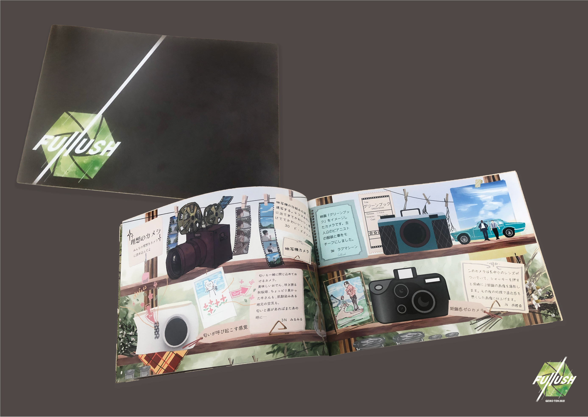
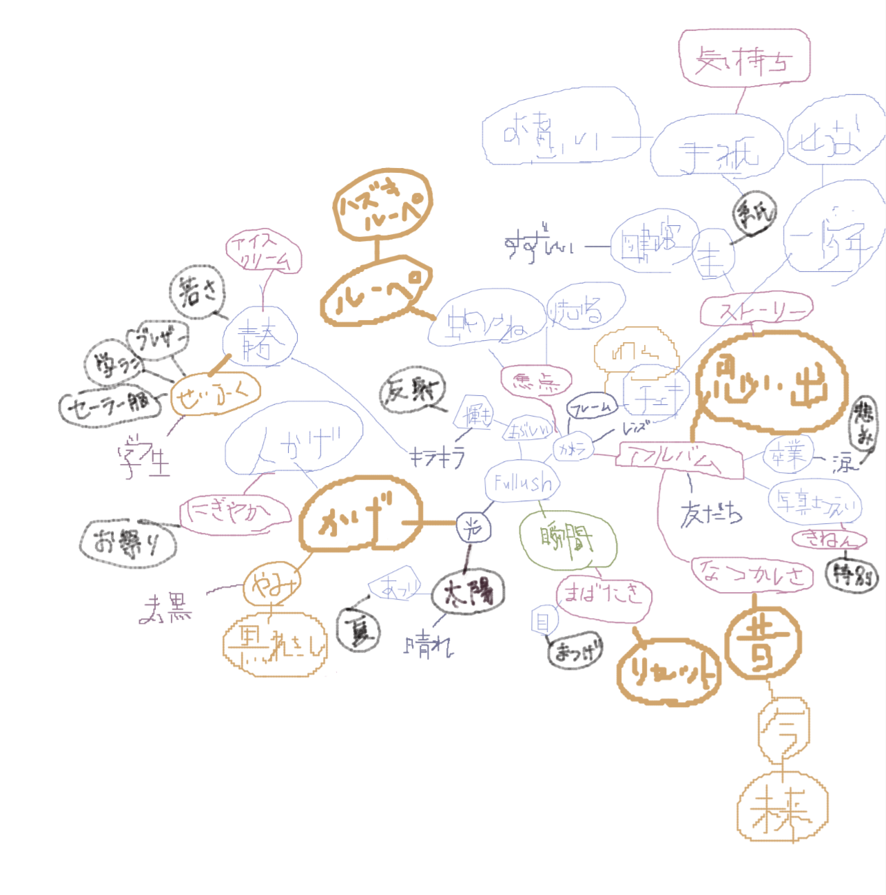
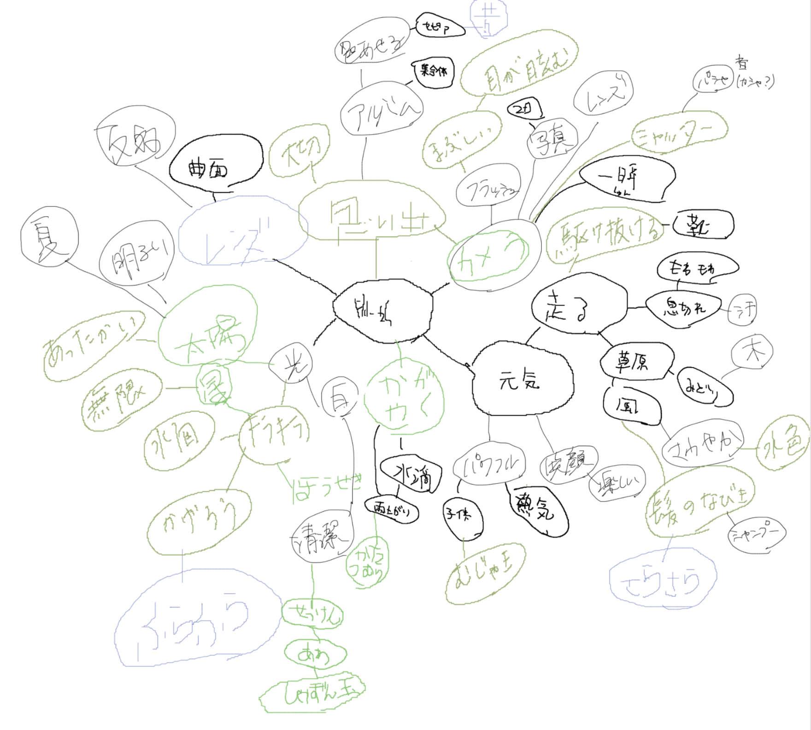
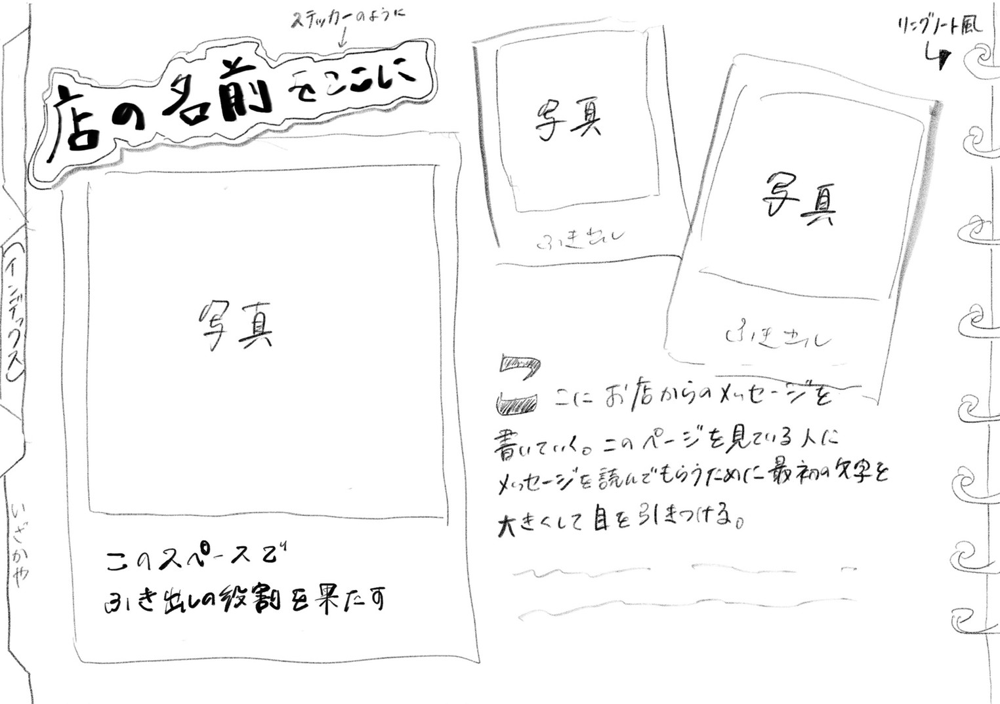
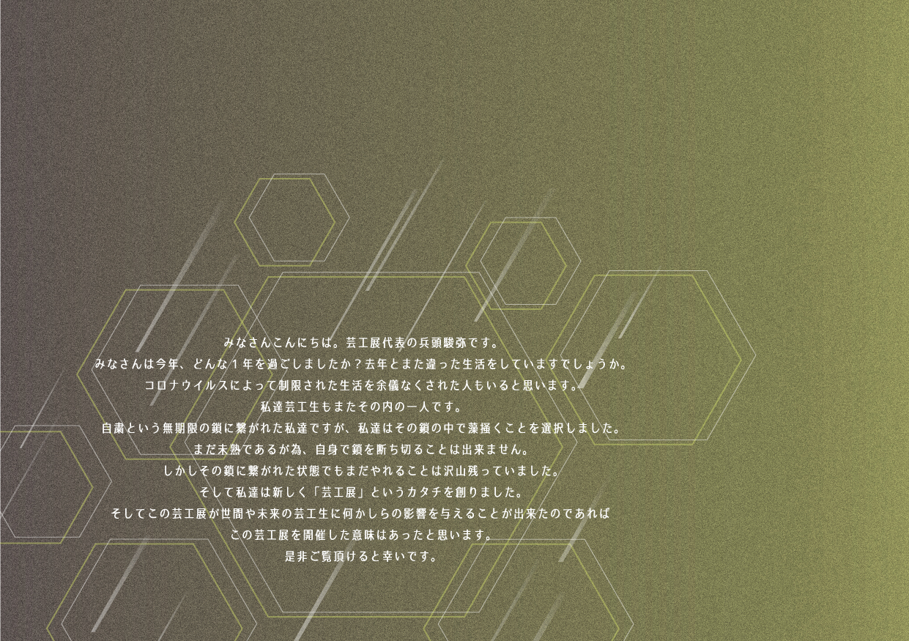
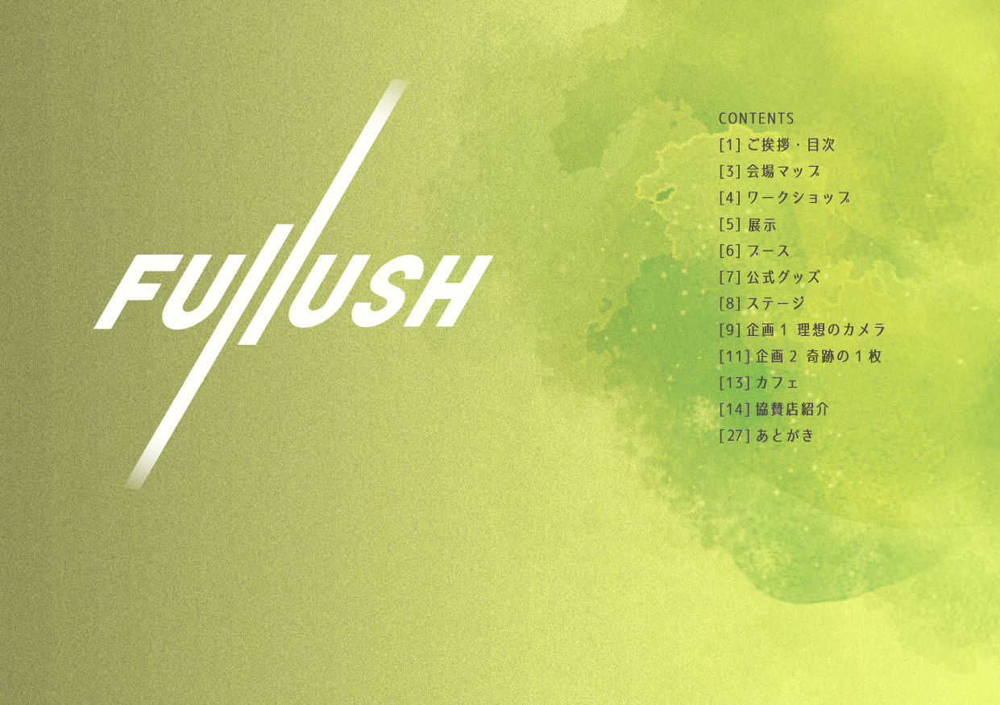
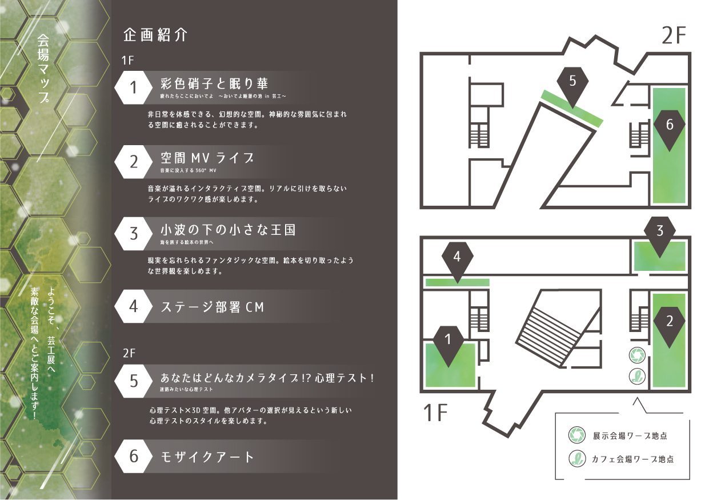
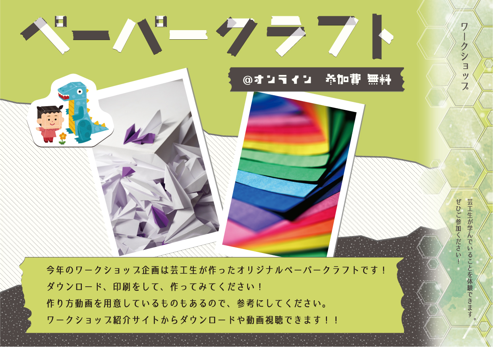
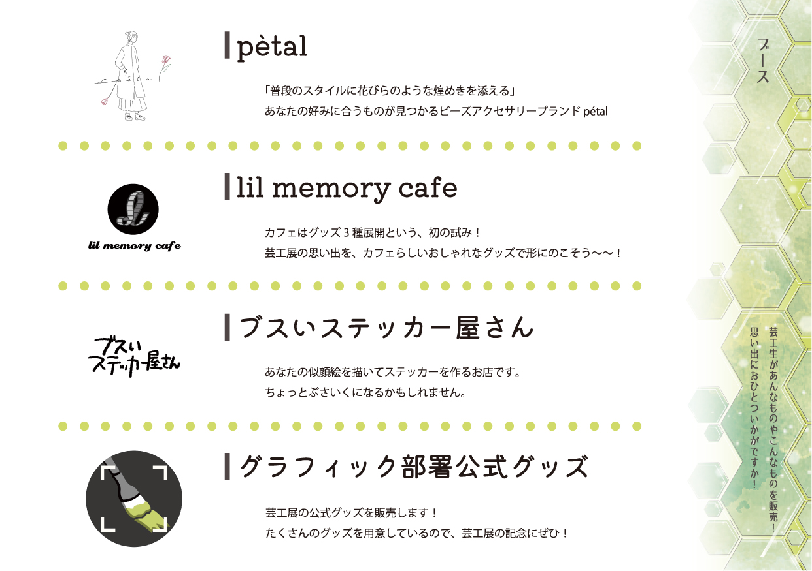

---Pamphlet---
芸工展2021 パンフレット
◴ 2021/7/31-2021/10/10 ✎ Illustrator Photoshop
PROCESS
パンフレット班班長として活動（他２名）全体の進め方を決め進捗を管理しながらオンラインで活動を進めた
--全体での活動--
班員15名を情報班・企画班・協賛班の3つにグループ分け
全体でパンフレットのイメージを共有するため全員でマインドマップを作り、またイメージモチーフを持ち寄った


企画を全員で提案
各グループ同士進捗を共有したり意見を聞き合ったりしながらグループ毎に活動
--協賛グループでの活動--
下級生へデザインツールのレクチャー
全員でデザイン案を提案し選定
それぞれデザイン制作しながら毎週進捗をチェックし、デザインをブラッシュアップ
各グループのデータを集め班全員でデータチェックし、入稿
WORK





- 前のページ
- 次のページ